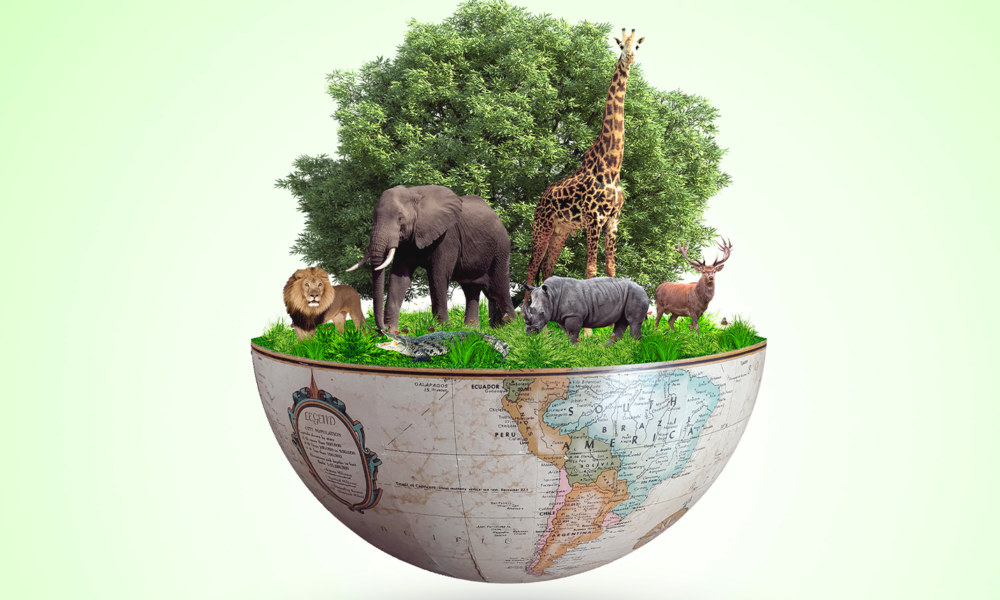
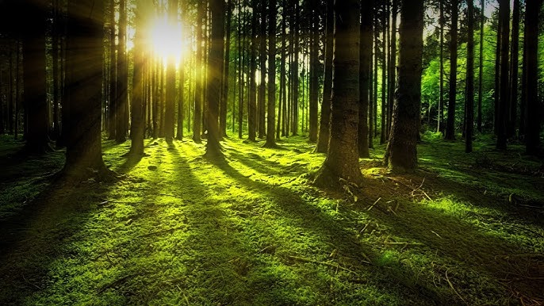
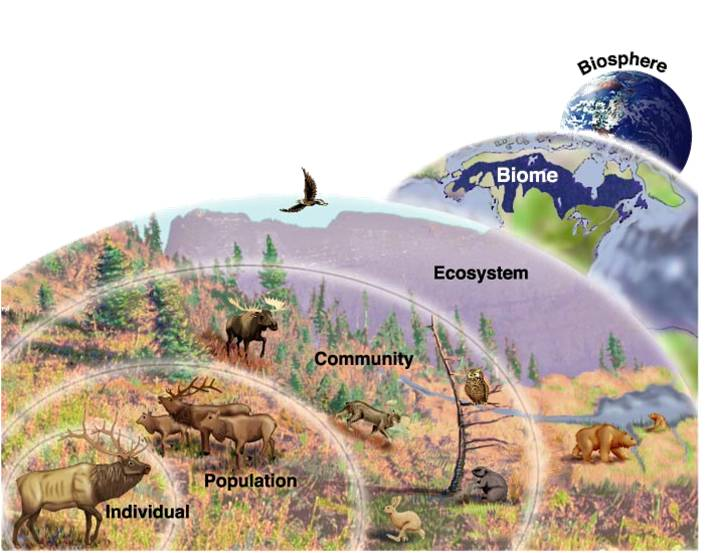

Biodiversity, short for biological diversity, refers to the variety and variability of life forms on Earth.It encompasses all the different
species of plants, animals, microorganisms, and the ecosystems they inhabit. Biodiversity is a fundamental component ofthe natural
world and plays a vital role in maintaining the health and stability of ecosystems. It includes three main levels of diversity:
1. Genetic Diversity: This level of biodiversity focuses on the variety of genes within a species. Genetic diversity is essential for
the adaptation and survival of species, as it allows them to evolve and respond to changing environmental conditions.
Higher genetic diversity can lead to healthier and more resilient populations
2. Species Diversity: Species diversity refers to the number and variety of different species in a particular habitat or ecosystem.
It is a measure of the richness and evenness of species present in an area. High species diversity is often indicative of a healthy
and well-balanced ecosystem.
3. Ecosystem Diversity: Ecosystem diversity relates to the variety of different habitats, ecosystems, and ecological processes in a
given region. It includes the different interactions and relationships between species, as well as the physical and environmental
factors that influence them.
Biodiversity of Punjab

Punjab is a one of smallest state located in the northern part of India contributing about 1.5% area of country and is a part of
Indo-Gangetic alluvial plains formed due to the sediments deposits of rivers and its tributaries. Punjab can be divided into 3
physiographic regions, namely; Sub-mountainous Himalayas- Shivalik Hills, Central & Eastern Alluvial plains and Western Semi-arid
Area. The climate of the State is tropical, semi-arid, hot and subtropical monsoon type with cold winter and hot summer. Despite its
small size, Punjab has an extraordinary amount of diversity in both terrestrial and aquatic habitats.
Key Facets of Biodiversity in Punjab
• Predominantly cropland ecosystem with 84 % area under agriculture
• 5.93% of Total Geographic Area under Forest Cover (3.67 %) and Tree Cover (2.26 %) (ISFR – 2023)
• Large number of flora and fauna recorded from forests area, agricultural areas & wetlands
• 4 Biodiversity Rich Gardens
• Many Sacred Groves & Biodiversity Rich Sites outside the Protected Area Network
Biodiversity Benefit to the society

a website dedicated to biodiversity in Punjab can serve as a valuable resource for education, awareness, and action, helping to
ensure the long-term health of the region's ecosystems and their benefits to society. It can inspire positive change and a greater
appreciation for the natural world, leading to a more sustainable and harmonious relationship between humans and the environment.
> Educational Resource
> Conservation Awareness
> Scientific Knowledge
> Tourism and Recreation
> Economic Benefits
> Climate Change Resilience
> Cultural and Indigenous Knowledge
> Medicinal and Agricultural Knowledge
> Policy Advocacy